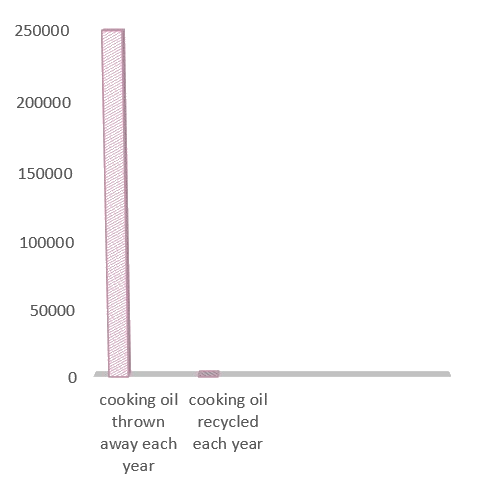

Saponification of fats
Soaps are salts of fatty acids, which in turn are carboxylic acids with long carbon chains.
Vegetable oils and animal fats are the traditional materials that are saponified. These greasy materials, triesters called triglycerides, are mixtures derived from diverse fatty acids. Triglycerides can be converted to soap in either a one- or a two-step process. In the traditional one-step process, the triglyceride is treated with a strong base (e.g. lye), which cleaves the ester bond, releasing fatty acid salts (soaps) and glycerol. This process is also the main industrial method for producing glycerol. In some soap-making, the glycerol is left in the soap. If necessary, soaps may be precipitated by salting it out with sodium chloride.
Our project aims to use used frying oil to make soaps to be used which in order will benefit the income and our environment.
The danger of draining cooking oil

The disposal of used cooking oil by pouring it into your sink can harm you and your neighbors too. This act can cause several problems like sewer clogs, raw sewer spurts and threats to the local water treatment process.
1. Sewer clogs
- Everything that goes down the sink ends up in a sewer, which is mostly composed of water and waste. However, it’s no secret that oil and water don’t mix.
When pouring cooking oil and other forms of grease down the drain, you’re sending down a compound that can clog the flow of water. Clogs happen when multiple groups of carelessly-disposed-of oil join together. These happen so frequently and they’re so problematic that they actually have a name – a fatberg.
2. Raw Sewer Spurts
-
As more and more fatbergs clog up the sewers, there’s a bigger chance of raw sewer water and waste coming up the pipes you previously poured grease down.
This is pretty much the only way for the sewer to relieve the pressure of the water and waste that build up when oil clogs the pipes. If the waste can’t go out and be treated, it’s going to pump back up and create a sanitary issue in your home or restaurant.
3. Threats to the Local Water Treatment Process
-
Ideally, there would be no fatbergs in the sewer lines and the water treatment process would be a breeze. When the presence of grease and other non-dissolving materials enter the sewage lines, though, water treatment takes much longer. It also isn’t as efficient because there’s so much more waste to process and take care of.
This can significantly compromise the quality of the local water supply. Keep in mind that “local” may mean your apartment building, your city block, or the whole town! This depends on how many people are pouring grease down the sink and how often.
We have found the best solution which is turning this used oil to useable soaps.